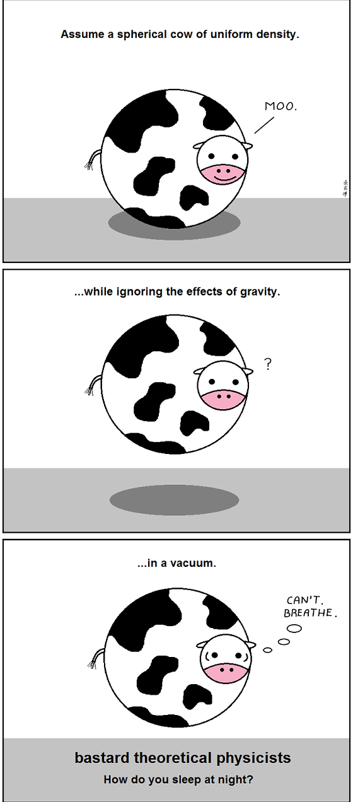

Hello again, and welcome to my website. More specifically, welcome to my “blog”. I have that in quotations because I am not so sure yet that the bulk of the writing I will do here will take the traditional “blog” format. In general, the purpose of this “blog” is the same as any other: to provide an outlet for my thoughts that can be communicated better than just thinking them at people.
However, I am sure that the thoughts that I would like to share over the years will take on wildly different lengths and media. This is where my “blog” will vary from the norm. Some entries could be massive musings, while some may be short puzzles, animations, open questions, recipes, what have you.
If you accept the premise that academic websites should also be personal sites, then it doesn’t make sense not to break a few other conventions, if doing so will have some utility. Spherical cows and whatnot.

LLNL Blog #1
I am posting this on Friday, June 31st, 2024. Today is now my third day working at Lawrence Livermore National Laboratory (LLNL). I have an internship here for the rest of the summer, so now seems a fitting time for a “preflection” on what I expect from and plan to do throughout the experience. As a reader of this page, my guess is that you are interested in some capacity in my early research work and my perspectives on that work, so that is what I will try to focus on.
At this point in my life, I have really only watched research being done first-hand in relatively small groups in a teaching university setting. I have noticed that, at least in such an environment, that grant-writing is a huge process that takes up the majority of the skilled labor available to the group. This is obvious in the case of the College of Charleston, where most research is done just by a single professor and an undergraduate or two. A large part of my motivation in transferring out of CofC is this very thing. I think that having the opportunity to participate in research directly with an expert mentor has been extremely useful in learning the process and getting a higher-level perspective on what it means to be a researcher, but I am hoping to bring that into a laboratory setting with more labor, and frankly, more funding. That being said, I think that having the experience of direct mentorship as early as I had will serve me well in getting more important roles in those larger labs, compared to my age-peers who’s research experiences thus far have consisted of getting coffee and cleaning lab equipment.
That brings me to LLNL. Also known as “Lasers, Lasers, Nothing but Lasers”, LLNL represents, in theory, the extreme end of the research-to-teaching spectrum, with billions in funding annually for almost exclusively research. I get the impression that how research universities view the research done at small teaching schools like CofC, LLNL views the research done at most large research universities. So far I have attended a few seminars briefing the historical and current work done at the lab. A conclusion that one of these seminars came to was that the very expensive early experimental work done at the lab is what paved the road for the same technology to be feasible in a university lab setting, where the application and optimization occurs. In my own analogy, it's like how the government funding of highways is expensive, massive, and general, and is more or less designed to stimulate the economy and encourage the birth of new towns, which ultimately becomes the profitable basis of the investment represented by the highway.
This makes the concept of the national lab very compelling. What academic wouldn’t want near-guaranteed funding in perpetuity? A big drawback of course is that LLNL is a secure facility. It is very difficult to gain public/wide acclaim for classified work, regardless of its impact. In practice, I doubt that this would matter much in terms of career development, as good work will still yield internal progress, which can likely be manifested externally later. The larger concern for me personally is that it means that application and progress is then in the hands of the government, and presumably more difficult to pursue on a personal level. For example, if I inexplicably am able to create a practical gamma laser for lab environments, further development of such technology would be in the hands of the politicians and administrators. This is almost certainly not a bad thing for, say, nuclear devices and other weapons, but could be difficult when working on more politically-benign devices, especially those meant for academic or commercial use.
Because of this, I anticipate that working in such an environment will give me insight into a very new kind of corporate-like research structure. If I have the means, I like the idea of founding a general research and development organization in the future of my career. As novelty is something that I always strive for, seeing what kinds of structures already exist, along with their pros and cons is personally extremely valuable. Specifically, I envision a kind of ‘federation’ that provides a certain amount of funding, more or less in perpetuity, to select research groups and returns to them the time that they would otherwise use applying for such funding, in return for some IP rights from their research. Once the organization has some IP rights for the new technology, they can utilize the economy of scale to expedite the process of commercial application, thus providing more funding for the system. It is my hope that such a structure would benefit from the application and relatively cheap cost of university-setting research, while simultaneously being more efficient than the existing university government-grant system. While this is obviously a very ambitious and economically-difficult system to establish, determining whether such a system is even worth pursuing in its current form depends in no small part on what I see and learn this summer from the case study of LLNL.
Ideally I will also walk away from the summer with my name in a paper, lifelong connections, and another job offer for next year, but this is less meta-progress and is kind of the consequence of doing well at the work that I do. I also anticipate enjoying rock-climbing, living in a new city, and meeting new people, etc., as any other 19 year old would, but these aren't nearly as unique or relevant as the spiel above. Regardless, I look forward to a fun, and hopefully very productive, summer.